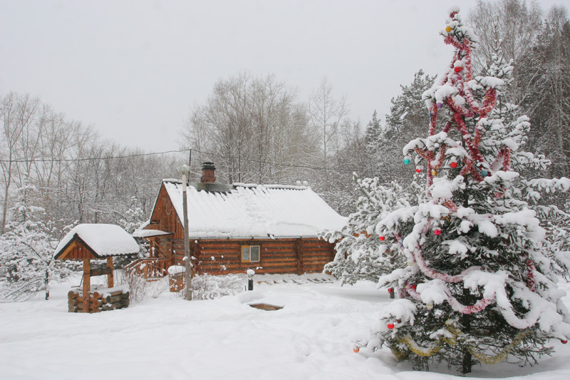
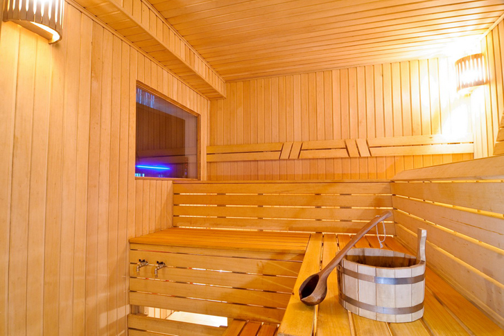

Издавна бани на Руси состояли из всего одного помещения – большой и просторной парилки, в которой и парились, и мылись, и выбегали прямо из полымя и жара в снежные сугробы.

Сегодня на рынке существует масса предложений от строительных компаний на вкус любого заказчика.

Русская печь уникальна по своей сути. Появилась русская печь в России на рубеже XVII – XVIII веков.




Издавна бани на Руси состояли из всего одного помещения – большой и просторной парилки, в которой и парились, и мылись, и выбегали прямо из полымя и жара в снежные сугробы. Но сегодня бани из ароматных бревен строятся уже по другой схеме – в них есть и комнаты отдыха, и отдельные моечные, и террасы с барбекю, и бильярдные и целые SPA-салоны. Вотчина Country Club совместно с компанией ДомЭко предлагает проектные решения по строительству деревянных бань из бруса. Где каждый проект может быть изменен и перепланирован под индивидуальные требования и решения. Высококвалифицированные архитекторы и конструкторы по деревянному домостроению помогут создать индивидуальный план вашей бани. Примеры строительства на сайте компании http://domeco.ru/gallery/bath/. Для расчета проекта вам необходимо связаться со специалистами компании ДомЭко: +7(499) 390 59 87; +7(926) 007 29 46 [email protected]
Про особенности современной русской бани мы попробуем рассказать в этой статье.
Но сначала краткая ремарка о видах бань:
Национальные обычаи отдельных народов повлияли и на особенности устройства бань и проведение банных процедур. По конструкциям, а также в зависимости от температуры и влажности воздуха в парильном отделении бани-парные подразделяются на три основных типа:
1) бани суховоздушные (городская общественная баня-каменка, русская, финская сауна) с температурой от 60 до 120° С и влажностью от 5 до 25%;
2) бани сырые (парная, русская, финская, восточная), температура в которых бывает от 50 до 70° С, а влажность – от 80 до 100%;
3) водяные, или японские, бани.
Каждая из этих бань имеет свои достоинства и недостатки. В настоящее время наиболее распространенными являются русская баня и финская сауна. Кстати, их общей прародительницей является одна и та же бревенчатая изба, которая топилась по-черному. Как в русской, так и в финской бане пар получают в печах-каменках, обливая водой их раскаленные камни. Разная влажность воздуха зависит от устройства печи, а также от того, насколько часто камни смачиваются водой. Следует также отметить, что устройство русской бани и сауны, так же как и конструкции их отдельных элементов, не имеют каких-либо принципиальных отличий, поэтому изложенные ниже рекомендации по строительству бани одинаково применимы как к русской парной, так и к финской сауне.
Основные отличия настоящих русских бань таковы:
а) по конструкции - деревянные с кирпичными печами
б) по принципу нагрева - нагрев паром
в) по историческим традициям приёма банных процедур - потение с использованием веника, контрастные процедуры
Выбор места для строительства
Специалисты компании ДомЭко утверждают, что идеальным местом для строительства бани является берег какого-либо водоема: реки, озера или пруда. Но располагать ее у самой воды не стоит, т. к. всегда существует опасность ее затопления в период весеннего паводка. Поэтому закладывать баню лучше всего на расстоянии 15–30 м от воды, но так, чтобы использованная вода не попадала в водоем и не загрязняла его.
Даже если на участке нет берега реки, место под баню желательно выбрать на некотором возвышении. Это позволит избежать дополнительных расходов на устройство водоотвода, использованная вода будет отводиться самотеком. Построить баню можно и на крутом склоне в виде землянки или полуземлянки с террасой на столбах, которая будет служить солярием, детской площадкой, мастерской или местом для отдыха. А вход сделать с юга, т.к. зимой с южной стороны меньше сугробов, а весной они тают быстрее.
Ради эстетического удовольствия окна бани стоит вывести на запад или юго-запад. Так как баню чаще всего топят по вечерам, и лучи заходящего солнца будут заглядывать к вам в окна и создавать атмосферу уюта и покоя.
И, конечно, уделить пристальное внимание пожарной безопасности. Какое бы место в планировке участка вы не выбрали под русскую баню, не следует выполнять строительство на расстоянии меньше 15 метров от дома и других хозяйственных построек.
Фундамент
Наши партнеры из компании ДомЭко рекомендуют: «Строительство фундамента бани делать выше уровня земли (примерно на 50 см). А отделку верхней части фундамента покрыть цементным раствором. Состав для отделки в соотношении: одна часть цемента к трем частям песка».
В строительстве фундамента под баню используют различные строительные материалы. Надежность, прочность вашей бани, ее отделки, целиком будет зависеть от качества фундамента и материала. Монолитный бетон, бетонные блоки, керамический кирпич-железняк можно использовать в качестве материала для фундамента тяжелой массивной деревенской бани с мансардой.
Закладка фундамента - важный, ответственный шаг в планировке и строительстве бани, который лучше доверить профессионалам.
Деревянная русская баня теплая, сухая.
Исторически сложилось так, что строительство русской бани выполняют из деревянного бруса. На стенах, внутренней отделки такой русской бани не скапливается конденсат. Сквозь поры дерева конструкции стен и внутренней отделки сруба всегда проходит воздух, баня как бы дышит, обеспечивая тем самым вентиляцию отделки, регулируя влажность в помещении русской бани и мансарды над ней. К тому же, если использовать для постройки сруба хвойные породы деревьев, то вы будете наслаждаться смоляным ароматом свежего дерева отделки, каждый раз, как только захотите попариться. Если парную бани топить регулярно, по крайней мере, раз в неделю, отделка стены сруба не будут успевать просохнуть и благоухания в помещении вашей бани и мансарды останутся на долгое время.
Выбор пород дерева для строительства сруба и отделки весьма разнообразен, от лиственных (липа, дуб, береза) до хвойных (сосна, ель). Главное, чтобы дерево для строительства и отделки было прямое, выдержанное, без сучков и смоляных полостей.
Внутренняя планировка, отделка помещений должна быть оптимальной не только для мытья и парения, но и для хорошего, здорового отдыха. Для этого целесообразно помимо парной при строительстве русской бани предусмотреть устройство и соответствующую отделку предбанника и тамбура.
Печи для бань
Подход к выбору печки для бань весьма индивидуальный. Среди огромного разнообразия печей для бань необходимо выбрать именно ту, возможности которой будут отвечать вашим требованиям.
Электрические печки для бань хоть и потребляют значительное количество электрической энергии, зато их не требуется чистить от сажи и копоти. Они позволяют, не прикладывая особых усилий поддерживать нужную температуру в парилке. К тому же, электрические печки для бань, в отличие от дровяных, которые надо топить углем или дровами, не выделяют в окружающую среду продукты горения.
Дровяные печи для бань, являются своего рода классикой. Пусть они не так экологичны, как электрические. Пусть их трудно регулировать. Зато ни одна электрическая печь для бань не придаст вашему организму того здоровья и энергии, которые вы сможете почерпнуть парясь в баньке, где стоит настоящая русская дровяная печка и испускает приятный запах горящих дров с их незабываемым потрескиванием.
Но все же, приверженцем какой бы печки в баню вы не были, будь то, печи-каменки либо камины импортного или отечественного производства, устанавливая печь в баню всегда необходимо придерживаться определенных правил безопасности, и все-таки довериться специалистам.
***
Добавим, что ведущим партнером по строительству в Вотчине Country Club является компания ДомЭко. Наши компаньоны специализируются на настоящих русских банях с соблюдением всех технологических процессов и традиций. Для осуществления своей мечты вам необходимо просто связаться с компанией и предоставить все заботы мастерам ДомЭко.
Напоминаем, что на нашем сайте опубликована статья о строительстве частных домов "Про свой дом!", в которой подробно рассказано о том из чего и как строят современные загородные дома, также в этой статье вы найдете комментарии экспертов и советы по строительству дома. Статья находится по ссылке http://www.votchina.ru/news/562/
Напоминаем, что поселок больших участков «Вотчина Country Club» расположен во Владимирской области, в 10 км от города Юрьев-Польский и в 3 км от провинциального городка Бавлены с одноименной ж/д станцией, где есть магазины, больница, школа, детский сад и другие социально-значимые объекты.
Богатая и живописная природа поселка производит неизгладимое впечатление и дарит мир, окутанный загадкой, легкостью и добрым теплом земли. Природные родники на территории, естественные водоемы, высокоплодородная земля Ополья, большая вода и густой лес по периметру отрада для рыбаков, охотников и грибников.
Ждем Вас в нашем поселке!
По материалам сайта http://stroy-banya.com; http://www.teplotek24.ru; по книге Е.В.Добровой «Строим баню»;
Error: Undefined variable: category_text File: /var/www/votchina.su/data/www/votchina.ru/templates/template-news.php (65)